Procedure For E60, E61, E63, E64, E65, E66, E90 & E91 Vehicles
PROCEDURE FOR E60, E61, E63, E64, E65, E66, E90 & E91 VEHICLES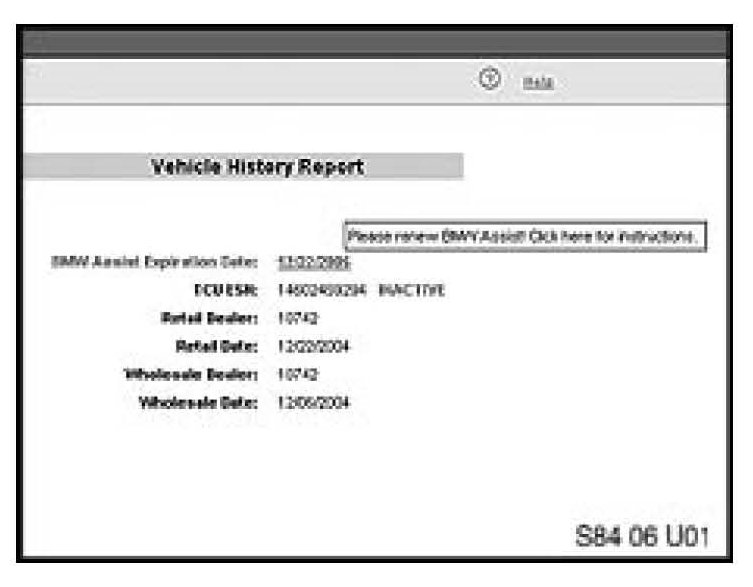
1. [NEW] Check the BMW Assist account status on DCSnet. The BMW Assist services expiration date and TCU activation status can be checked on DCSnet under Service/Vehicle History Inquiry. Refer to SI B02 01 06 (Updated DCSnet Vehicle History Inquiry information of BMW Assist) for more information.
Note:
If no information is displayed on DSCnet, check the account status by calling BMW Assist.
2. [NEW] If the customer is NOT an active BMW Assist services client, no further action is required.
3. Obtain the Electronic Serial Number (ESN) of the TCU installed in the vehicle, use the following path within the DIS or GT1 to check and write the new MIN and MDN.
^ Perform a Short Test
^ Function Selection
^ Complete vehicle
^ Body
^ Audio, video, Telephone and navigation (MOST)
^ Telecommunication / Telephone
^ Fixed Installation (This selection is omitted on 3 Series vehicles without CCC)
^ Telematic Control Module (US)
Note:
This step is deleted in DIS V46.
^ Reactivate internal telephone module
^ Select test module (Reactivate internal telephone module B8400_00358)
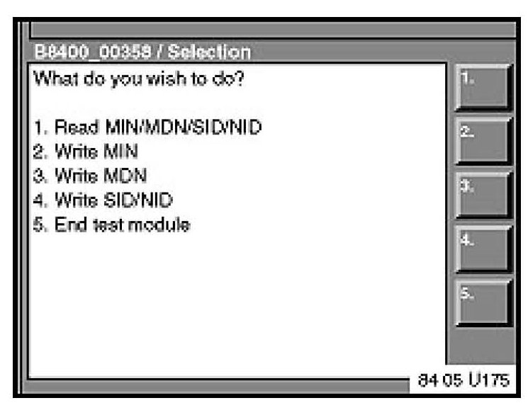
4. This screen will be displayed.
5. Select Option 1 (Read MIN/MDN/SID/NID)
^ [NEW] If a message 'Error ECU busy' is displayed, please refer to SI B84 25 06 before continuing.
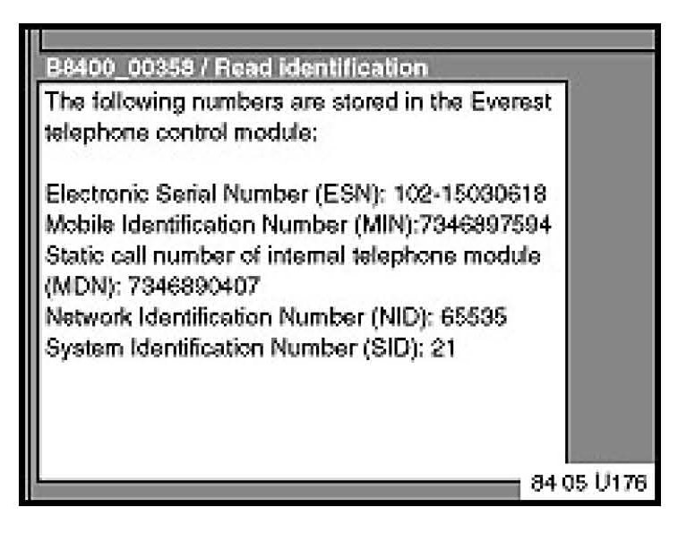
6. Print the screen to record the original ESN.
^ Select the right screen arrow.
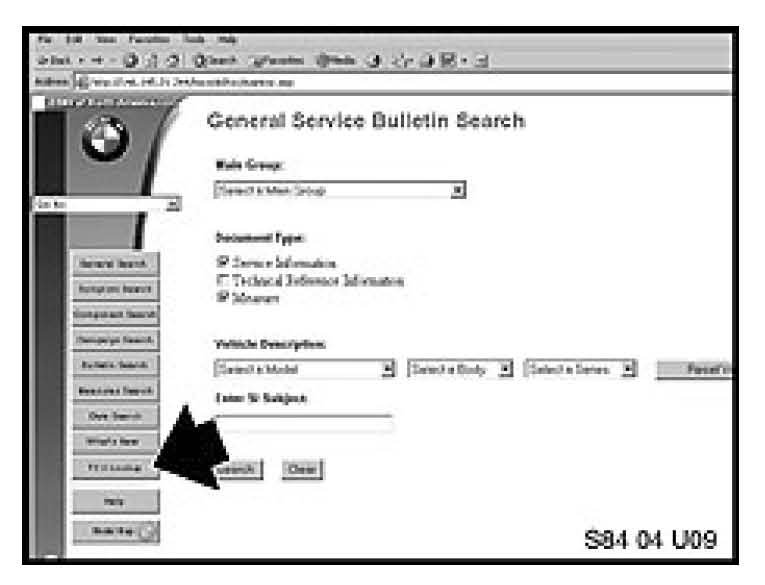
7. Using the TIS website, in the "Bulletins and Measures" section, press the special button marked "TCU lookup". Then select "Reactivation TCU".
^ Follow the on-screen prompts to enter the vehicle VIN and ESN, then press "Enter" to display the new Mobile Identification Number (MIN) and Mobile Device Number (MDN).
^ Press the "Print" button for a record of the new MIN and MDN numbers.
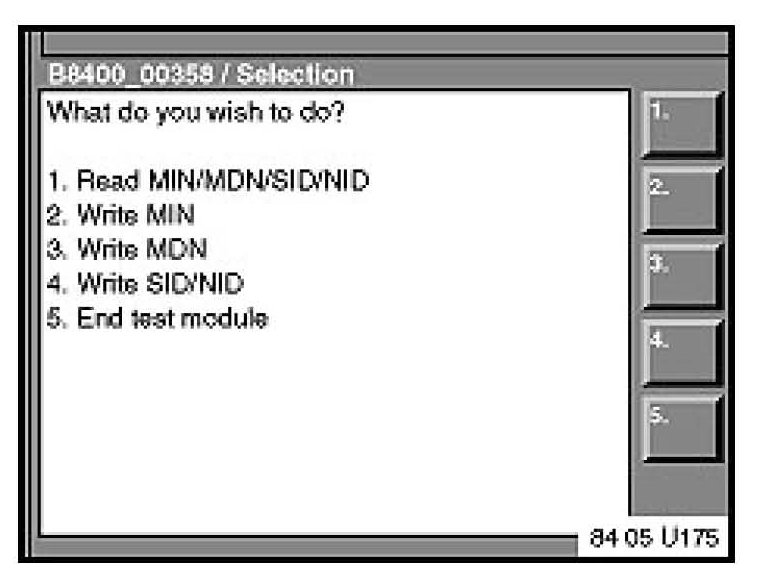
8. Select Option 2 (Write MIN).
^ Select the right screen arrow.
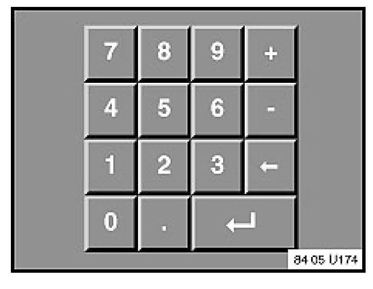
9. Using the number key pad on the left side of the screen, enter the new MIN.
^ Select the right screen arrow.
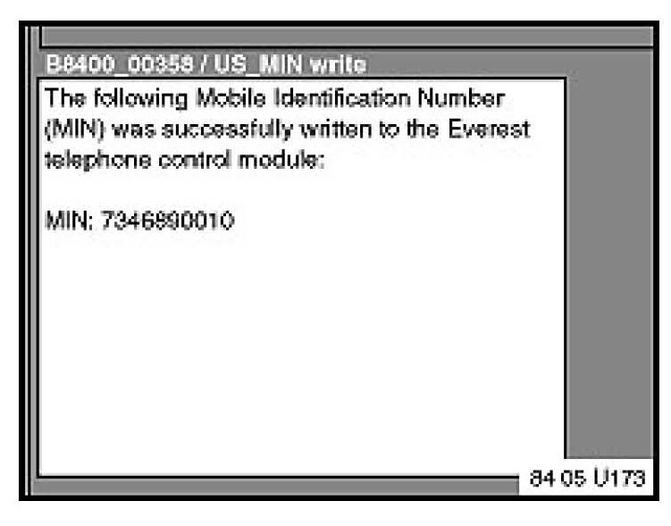
10. Verify the new MIN.
^ Select the right screen arrow.
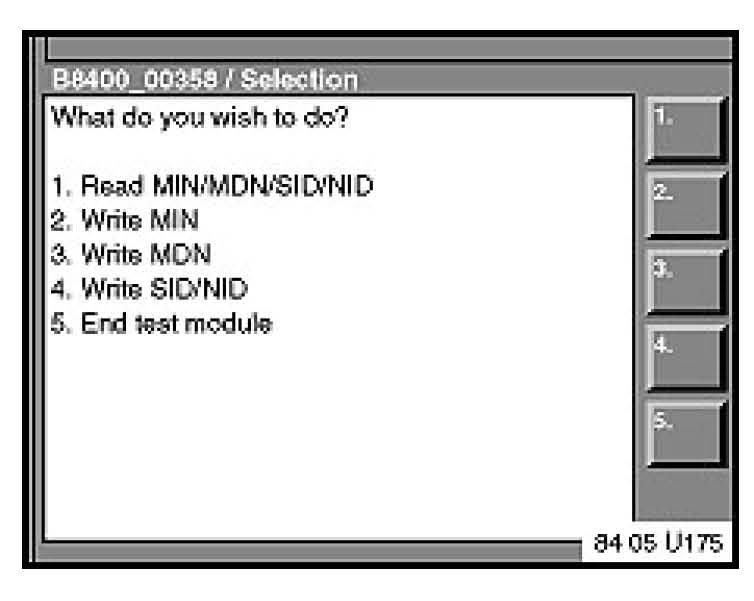
11. Select Option 3 (Write MDN) and select right arrow.
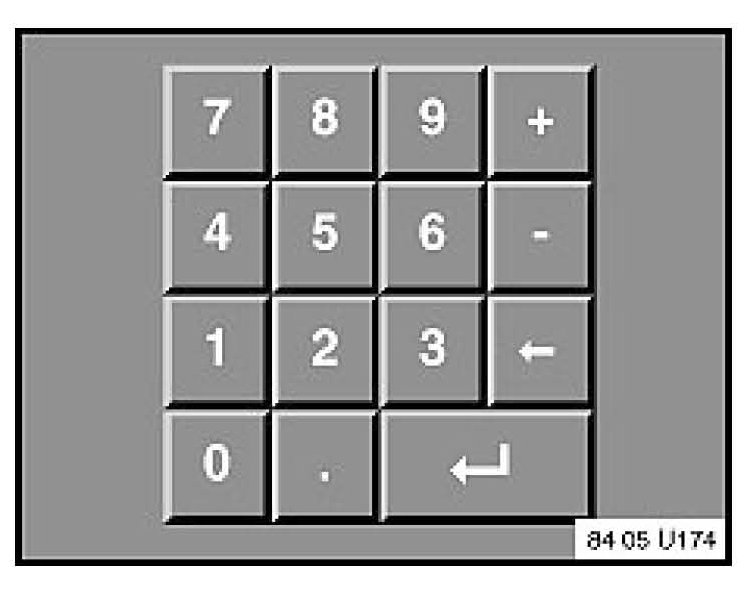
12. Using the number key pad on the left side of the screen, enter the new MDN.
^ Select the right screen arrow.
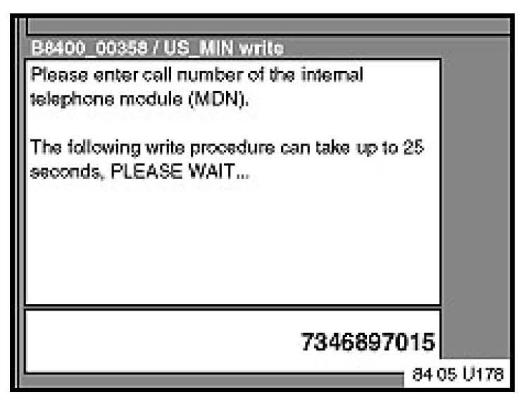
13. Verify the new MDN.
^ Select the right screen arrow.
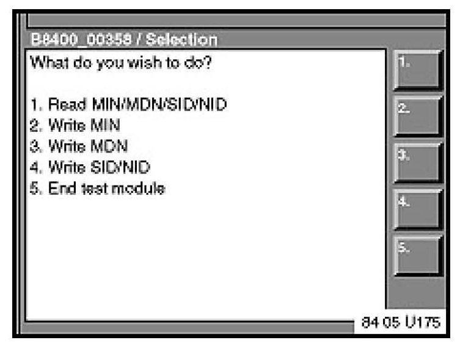
14. Select Option 1 (Read MIN/MDN/SID/NID)
^ Select the right screen arrow.
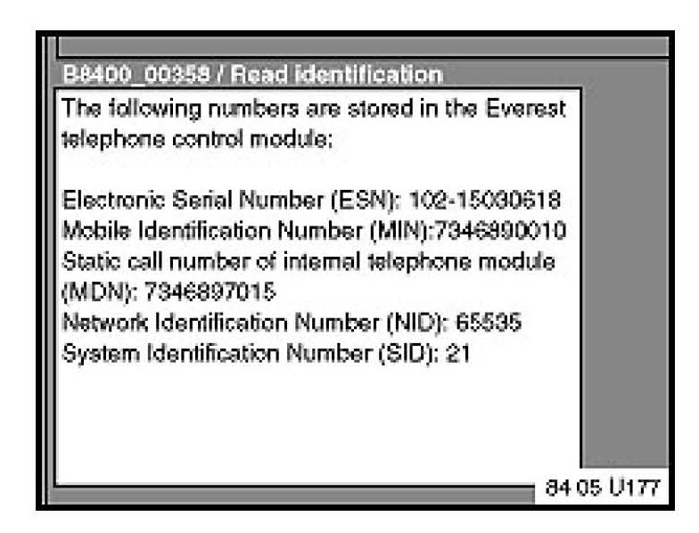
15. Check that the new MIN and MDN have been written correctly to the TCU.
^ Select the right screen arrow.
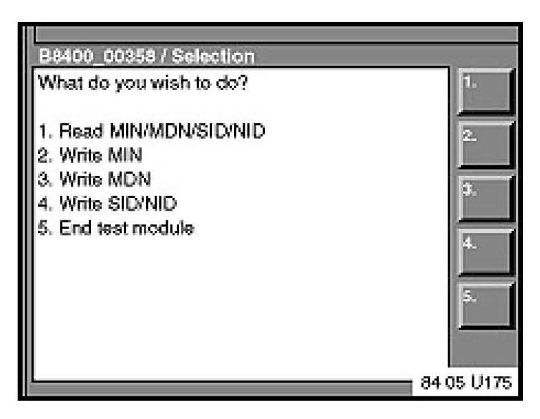
16. Select Option 5 (End test module)
^ Select the right screen arrow.
17. The BMW Assist services initialization procedure must be completed per SI B84 15 03 for all vehicles.
^ The vehicle must be in the Verizon Wireless Network for the initialization procedure to work properly. If the vehicle is not in the Verizon Wireless Network perform the outlined procedure and then follow these additional steps.
^ Create a PuMA case to received TCU shipping authorization.
^ Remove the TCU from the vehicle.
^ Send via FedEx the TCU, BMW Assist TCU Reactivation Form with the new MIN/MDN numbers and a copy PuMA case to:
BMW of North America, LLC.
Attn: Body Electrical Technical Hotline (TCU Reactivation B84 14 06)
1 BMW Plaza
Montvale, NJ 07645
^ BMW of North America, LLC will initialize the TCU and ship it out on the same business day it was received.
^ After receiving the TCU back from BMW of North America, reinstall the TCU and place a BMW Assisttrade; call as outlined in step 21.
^ All shipping charges (both ways) are to be billed to the dealer's Fed-Ex account. On the warranty claim, submit the Fed-Ex shipping charges (double the amount provided to you by Technical Hotline to cover shipment both ways) in the sublet section (using sublet code 4).
18. Test the BMW Assist(TM) service for proper operation by placing a test call (press the Roadside Assistance "Wrench" button). Make sure the BMW Assist Response Center has received the correct MIN/MDN, VIN and location for the vehicle. Have the representative update their records as needed.